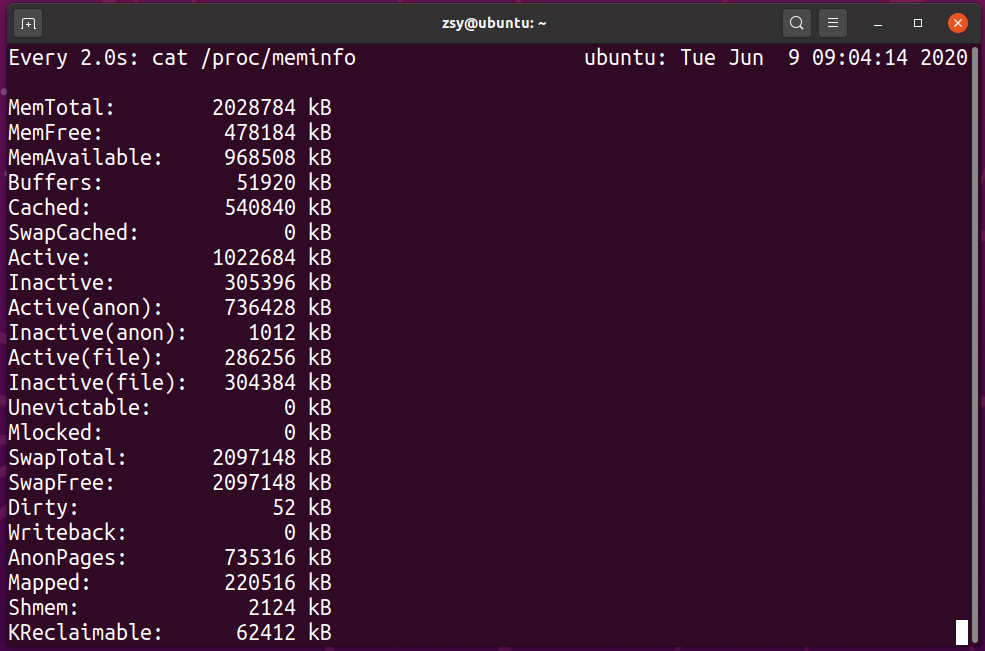
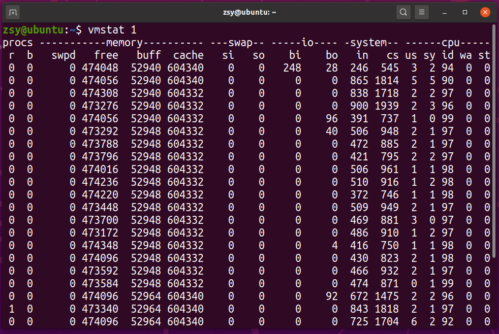
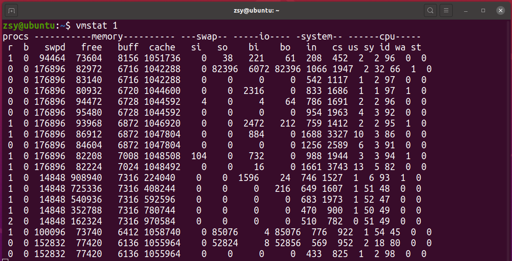

free数据来源
- Buffers 是内核缓冲区用到的内存，对应 /proc/meminfo 中的Buffers值
- Cache 是内核页缓存和Slab用到的内存，对应 /proc/meminfo 中Cached与SReclaimable之和
$ watch cat /proc/meminfo

【注】网上的结论可能是对的，但是很可能跟你的环境并不匹配。最简单来说，同一个指标的具体含义，就可能因为内核版本、性能工具版本的不同而有挺大差别。这也是为什么，我总在专栏中强调通用思路和方法，而不是让你死记结论。对于案例实践来说，机器环境就是我们的最大限制。
proc文件系统
- /proc是linux特殊的文件系统，是用户跟内核交互的接口
- 内核的运行状态
- 配置选项
- 查询进程的运行状态
- 统计数据
- 修改内核配置
- 也是很多性能工具的最终数据来源
- free就是通过读取/proc/meminfo，得到内存的使用情况
- Buffers 是对原始磁盘块的临时存储，也就是用来缓存磁盘的数据，通常不会特别大（20MB 左右）。这样，内核就可以把分散的写集中起来，统一优化磁盘的写入，比如可以把多次小的写合并成单次大的写等等。
- Cached 是从磁盘读取文件的页缓存，也就是用来缓存从文件读取的数据。这样，下次访问这些文件数据时，就可以直接从内存中快速获取，而不需要再次访问缓慢的磁盘。
- SReclaimable 是 Slab 的一部分。Slab 包括两部分，其中的可回收部分，用 SReclaimable 记录；而不可回收部分，用 SUnreclaim 记录。
示例
清理系统缓存：
$ echo 3 > /proc/sys/vm/drop_caches
磁盘与文件写入
使用vmstat命令

【关注重点】内存部分的 buff 和 cache ，以及 io 部分的 bi 和 bo
- buff 和 cache 就是 Buffers 和 Cache，单位是 KB
- bi 和 bo 则分别表示块设备读取和写入的大小，单位为块 / 秒。因为 Linux 中块的大小是 1KB，所以这个单位也就等价于 KB/s
场景 1：磁盘和文件写案例
步骤一：运行dd命令向磁盘分区/dev/sdb1写入2G数据
zsy@ubuntu:~$ sudo dd if=/dev/urandom of=/dev/sdb1 bs=1M count=2048
dd: error writing '/dev/sdb1': No space left on device
964+0 records in
963+0 records out
1009917952 bytes (1.0 GB, 963 MiB) copied, 5.31438 s, 190 MB/s
步骤二：观察内存与io变化

场景 2：磁盘和文件读案例
步骤一：读取数据写入空设备
zsy@ubuntu:~$ dd if=/tmp/file of=/dev/null
0+1 records in
0+1 records out
54 bytes copied, 0.000117266 s, 460 kB/s
步骤二：观察内存和 I/O 的变化情况
zsy@ubuntu:~$ vmstat 1
procs -----------memory---------- ---swap-- -----io---- -system-- ------cpu-----
r b swpd free buff cache si so bi bo in cs us sy id wa st
0 0 315136 97304 20068 985864 1 165 178 182 249 524 2 2 96 0 0
3 0 315136 97004 20076 985864 0 0 0 12 1056 2413 4 2 94 0 0
0 0 315136 95728 20076 985912 0 0 0 0 1590 3150 11 3 85 0 0
0 0 315136 96508 20076 985912 0 0 0 0 550 1042 2 2 96 0 0
0 0 315136 96248 20076 985912 0 0 0 0 618 1075 1 2 97 0 0
0 0 315136 96516 20080 985908 4 0 16 0 1308 2007 2 1 97 0 0
0 0 315136 130836 20088 985756 8 0 900 48 863 1750 2 2 96 1 0
0 0 315136 130096 20088 985756 0 0 0 0 659 1225 1 2 97 0 0
0 0 315136 131104 20088 985756 0 0 0 8 801 1488 2 2 96 0 0
0 0 315136 131088 20088 985756 0 0 0 0 848 1676 2 1 97 0 0
^Z
[6]+ Stopped vmstat 1
读磁盘时（也就是 bi 大于 0 时），Buffer 和 Cache 都在增长，但显然 Buffer 的增长快很多。这说明读磁盘时，数据缓存到了 Buffer 中。
- Buffer 既可以用作“将要写入磁盘数据的缓存”，也可以用作“从磁盘读取数据的缓存”。
- Cache 既可以用作“从文件读取数据的页缓存”，也可以用作“写文件的页缓存”。
小结
- 从写的角度来说，不仅可以优化磁盘和文件的写入，对应用程序也有好处，应用程序可以在数据真正落盘前，就返回去做其他工作。
- 从读的角度来说，既可以加速读取那些需要频繁访问的数据，也降低了频繁 I/O 对磁盘的压力。